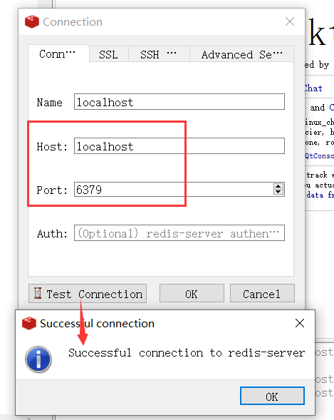

安装之前环境部署
关闭linux防火墙
systemctl stop firewalld |
如果你使用的是云服务器，务必进入云服务器,给6379端口放行
安装部署
拉取镜像
docker pull redis:latest |
从官网下载redis配置文件
wget http://download.redis.io/redis-stable/redis.conf
创建一个文件夹用于保存此文件
mkdir /root/redis |
更改redis.conf的配置
vi /root/redis/redis.conf |
将redis.conf文件下列参数更改
#bind 127.0.0.1 #允许远程连接(注释或者改为bind 0.0.0.0) |
启动容器
docker run -p 6379:6379 --name redis -v /root/redis/redis.conf:/etc/redis/redis.conf -v /root/redis/data:/data -d redis redis-server /etc/redis/redis.conf |
参数说明:
- -p 6379:6379：把容器内的6379端口映射到宿主机6379端口
- –name redis：设置容器名称为redis
- -v /root/redis/redis.conf:/etc/redis/redis.conf：把主机配置好的redis.conf放到容器内的这个位置中
- -v /root/redis/data:/data：把redis持久化的数据在宿主机内显示，做数据备份
- -d：redis后台运行
- redis-server /etc/redis/redis.conf：这个是关键配置，让redis不是无配置启动，而是按照这个redis.conf的配置启动
完成测试
查看容器是否启动：
docker ps |
进入容器，检查是否可以启动redis-cli
root@Met-Guo:~# docker exec -it 56 bash # 56为容器id |
在宿主机安装Redis Desktop Manager客户端，并配置

成功。